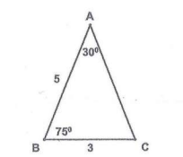
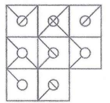
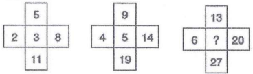
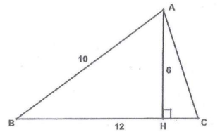
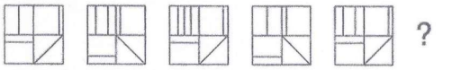

Câu 1:
Để tạo ra màu tím, ta trộn thuốc nhuộm màu đỏ và màu xanh theo tỷ lệ 3:4.
Để tạo ra màu cam, ta trộn thuốc nhuộm màu đỏ và màu vàng theo tỷ lệ 3:2. Nếu lượng thuốc nhuộm màu
tím và màu cam bằng nhau được trộn với nhau thì tỷ lệ thuốc nhuộm màu đỏ trong hỗn hợp mới chiếm bao
nhiêu phần?
Câu 2:
15% của 40 là số nào sau đây?
Câu 3:
Số nào trong các số sau có tính chất khác các số còn lại?
159; 248; 963; 357; 951; 852
Câu 4:
Chu vi của △ABC là:

Câu 5:
Số nào trong các số sau là tổng của tất cả các ước số dương của số
24?
Câu 6:
Cho tập hợp M = {1/6,1/4,2/3,5/6}
và x, y là hai phần tử của M. Hỏi giá trị lớn nhất có thể của 5x - 5y?
Câu 7:
Nam có 50 nghìn đồng. Hà có 110 nghìn đồng. Hỏi Nam phải đưa cho Hà bao
nhiêu tiền để số tiền của Hà gấp 3 lần số tiền của Nam?
8 nghìn đồng
7 nghìn đồng
10 nghìn đồng
9 nghìn đồng
Câu 8:
Nếu 3x = 5y và x≠0 thì x/y= ?
Câu 9:
Một trong ba sinh viên Nam, Hùng và Dũng đã đá bóng trúng vào cửa sổ làm
vỡ kính. Khi được hỏi, ba sinh viên đó trả lời như sau:
Nam: Em không đá quả bóng đó.
Hùng: Không phải em! Em thấy bạn Nam đã đá quả bóng đó.
Dũng: Hùng nói dối đấy ạ.
Biết rằng chỉ có một bạn trong ba bạn đó nói thật. Hỏi ai đã đá bóng đó?
Dũng đã đá quả bóng đó
Hùng đã đá quả bóng đó
Nam đã đá quả bóng đó
Không đủ dữ kiện để xác định ai đã đá quả bóng đó
Câu 10:
Nếu g(x) = 3x + √x thì giá trị của g(d2 + 6d + 9)
là:
3d2 - 19d + 30 hoặc 3d2 + 17d + 24
3d2 + 19d + 30 hoặc 3d2 - 17d + 24
3d2 - 19d - 30 hoặc 3d2 - 17d - 24
3d2 + 19d + 30 hoặc 3d2 + 17d + 24
Câu 11:
Khi chia số nguyên dương x cho số nguyên dương y được số dư là 9. Nếu
biết x/y = 96,12 thì giá trị của y là bao nhiêu?
Câu 12:

Hình nào bị thiếu?
Câu 13:
Nam, Hùng, Hoa, Hải và Bình cùng đứng trong một hàng. Hoa đứng trước Hùng
3 mét, Bình đứng sau Nam 4 mét, Nam đứng sau Hoa 5 mét, Hải đứng sau Bình 6 mét. Hỏi hàng đó đài bao
nhiêu mét?
14 mét
18 mét
12 mét
15 mét
Câu 14:
Mẹ hơn con 20 tuổi. Mười năm nữa, tuổi của con bằng một nửa tuổi của mẹ.
Hỏi tuổi của mẹ hiện nay là bao nhiêu?
Câu 15:

Chọn số thích hợp điền vào dấu hỏi chấm.
Câu 16:
Có ba đồng xu giống nhau được thả đồng thời. Hỏi xác suất để có hai mặt
sắp và một mặt ngửa?
Câu 17:
Hôm nay là thứ tư. Hỏi 80 ngày nữa kể từ hôm nay là thứ mấy?
Câu 18:
Số nào trong các số sau bé hơn 5/9?
Câu 19:
Nếu từ HOCCAO tương ứng với số 863316 thì từ CAOHOC tương ứng với số mấy
?
316863
386163
361863
368163
Câu 20:
Mai mua 29 quả gồm cam và táo với tổng số tiền là 385 nghìn đồng. Biết
rằng giá một quả táo là 25 nghìn đồng và giá một quả cam là 8 nghìn đồng, hỏi rằng Mai đã mua bao
nhiêu quả táo?
Câu 21:
Cho △ABC với đường cao AH, biết rằng AB=10, BC=12, AH=6. Diện
tích của △ABC là:

Câu 22:
Nếu x = -1 thì x² - x/ -3x
Câu 23:

Hình nào tiếp theo dãy hình trên?
Câu 24:
Nếu 1/3 của 2x bằng 5 thì 2/3 của 4x bằng bao nhiêu?
Câu 25:
Nếu x/a = 4, a/y = 6, a2 = 9 và ab2 = -8 thì x + 2y = ?
Câu 26:
Nếu không có sự can thiệp của nhà nước, độc quyền sẽ gây ra tình
trạng
định giá cao hơn so với mức giá cạnh tranh.
công ty độc quyền được hưởng siêu lợi nhuận.
sản lượng được cung cấp trên thị trường thấp hơn mức xã hội mong muốn.
Cả ba hệ quả trên.
Câu 27:
Nền kinh tế kế hoạch hóa tập trung là nền kinh tế trong đó các quyết định
sản xuất và phân phối đều được quyết định bởi
các tập đoàn đa quốc gia
chính phủ
các lực lượng thị trường
các nhà tài trợ quốc tế
Câu 28:
Chức năng của quản lý gồm:
Hoạch định (lập kế hoạch)
Tổ chức và lãnh đạo
Kiểm tra và giám sát
Tất cả các chức năng trên
Câu 29:
Tác giả bài thơ “Trường Sơn Đông, Trường Sơn Tây” là
Tổ Hữu
Nguyễn Bính
Nguyễn Tuân
Phạm Tiến Duật
Câu 30:
Nếu bạn mở một tài khoản tiết kiệm với mức lãi suất danh nghĩa là 8%/năm,
và tỷ lệ lạm phát là 2%, thì lãi suât thực là bao nhiêu?
Câu 31:
Đồng bằng Duyên hải miền Trung ít bị ngập úng hơn Đồng bằng sông Hồng và
Đồng bằng sông Cửu Long vì
mật độ dân cư thấp hơn, ít có công trình xây dựng lớn.
địa hình dốc ra biển lại không có đê nên dễ thoát nước.
lượng mưa ở Duyên hải miền Trung thấp hơn.
lượng mưa lớn nhưng rải rác trong nhiều tháng.
Câu 32:
Nguyên nhân dẫn đến nhân viên không hoàn thành công việc có thể là
thiếu động lực làm việc.
không nỗ lực thực hiện công việc.
năng lực không đáp ứng yêu cầu công việc.
Tất cả các phương án trên.
Câu 33:
Lãnh đạo cuộc khởi nghĩa Tây Sơn, lật đỗ chúa Nguyễn và chúa Trịnh, chấm
đứt cuộc nội chiến Đàng Trong — Đàng Ngoài kéo đài 200 năm ở nước ta là ba anh em.
Nguyễn Hữu Chỉnh, Nguyễn Nộn, Nguyễn Biểu
Nguyễn Nhạc, Nguyễn Huệ, Nguyễn Lữ
Nguyễn Huệ, Nguyễn Hữu Cầu, Nguyễn Xí
Nguyễn Bặc, Nguyễn Nhạc, Nguyễn Cừ
Câu 34:
Khu vực nào dưới đây KHÔNG thuộc Thế giới thứ ba?
Châu Phi
Châu Úc
Châu Á
Mỹ La-tinh
Câu 35:
Thuế lạm phát
là loại thuế đánh vào những tài sản có giá tăng trong thời kì lạm phát.
chuyển dịch của cải từ chính phủ sang các hộ gia đình.
là sự gia tăng của thuế thu nhập do thu nhập chịu thuế không được điều chỉnh
theo lạm phát.
làm giảm giá trị tài sản của người giữ tiền.
Câu 36:
Có nhận định cho. rằng "doanh nghiệp có thời gian hoạt động càng dài thì
càng ít đổi mới sáng tạo". Lập luận nào dưới đây hỗ trợ cho nhận định này?
Thời gian hoạt động càng đài, doanh nghiệp càng có xu hướng duy trì các quy
định và lề lối làm việc hiện có nên gây trở ngại cho hoạt động đổi mới sáng tạo.
Thời gian hoạt động dài giúp doanh nghiệp khẳng định được vị thế cạnh tranh
nên không cần thiết phải đổi mới sáng tạo.
Thời gian hoạt động dài giúp doanh nghiệp khẳng định được thương hiệu nên
không cần thiết phải đổi mới sáng tạo.
Thời gian hoạt động càng dài, doanh nghiệp càng tích lũy được những kiến thức
và kinh nghiệm cần thiết cho đổi mới sáng tạo.
Câu 37:
Các đồng vị của cùng một nguyên tố hoá học được phân biệt bởi đại lượng
nào sau đây?
Số notron
Số electron hoá trị
Số proton
Số lớp electron
Câu 38:
Việt Nam mua 100 USD rượu từ Pháp còn Pháp mua 40 USD hàng may mặc từ
Việt Nam. Giá trị xuất khâu ròng trong các hoạt động thương mại này của Việt Nam và Pháp lần lượt
là
60 USD và -60 USD
100 USD và 40 USD
-60 USD và 60 USD
140 USD và 140 USD
Câu 39:
Tăng trưởng kinh tế Nga chủ yếu dựa vào
tài nguyên
vay nợ nước ngoài
tiêu dùng
Không điều nào nêu trên.
Câu 40:
Các nhà tiếp thị cần , đáp ứng tốt nhu cầu của khách hàng và xây dựng mối
quan hệ chặt chế với họ.
lập kế hoạch sản xuất
hiểu khách hàng
phát triển sản phẩm mới
tạo ra lợi nhuận cao nhất
Câu 41:
Kim loại nào sau đây dẫn điện, dẫn nhiệt tốt nhất?
Bạc (Ag)
Nhôm (AI)
Đồng (Cu)
Ma giê (Mg)
Câu 42:
Đa số dân Indonesia theo tôn giáo gì?
Ấn Độ giáo
Phật giáo
Thiên chúa giáo
Hồi giáo
Câu 43:
Ngân hàng không giữ nhiều tài sản của mình dưới dạng tiền mặt vì
sợ bị mắt tiền.
luật quy định.
giữ tiền mặt sẽ gánh chịu chỉ phí cơ hội cao.
điều này sẽ khuyến khích nhân viên gian lận.
Câu 44:
Yếu tố nào dưới đây ánh hưởng đến quyết định lựa chọn nhà cung cấp linh
kiện?
Tính ổn định trong cung cấp linh kiện
Tính nhanh chóng, kịp thời trong cung cấp linh kiện
Tính sẵn sàng cung cấp thông tin về linh kiện
Tất cả các yếu tố trên
Câu 45:
Chiến lược đa dạng hóa (kinh doanh những ngành và sản phẩm khác nhau) có
thể theo hướng có liên quan hoặc không liên quan. Ý nào dưới đây là ví dụ phù hợp nhất về đa dạng
hóa không liên quan?
Vinamilk mở rộng sang sản xuất các sản phẩm phô mai và kem.
Tập đoàn FPT thành lập FPT Aptech đào tạo lập trình viên.
Tập đoàn công nghiệp cao su Việt Nam đầu tư vào lĩnh vực chế biến hải sản và
du lịch.
Tập đoàn Vingroup xây dựng các tổ hợp gồm chung cư cao tầng, khu mua sắm,
trường học và bệnh viện.
Câu 46:
Yếu tố nào dưới đây KHÔNG phải là yếu tố sản xuất cơ bản?
Vốn
Đất đai
Lao động
Thể chế
Câu 47:
Để giảm nợ công, chính phủ nên
tăng chỉ tiêu chính phủ
giảm thuế
thực hiện chính sách tài khóa thắt chặt
tăng vay nước ngoài
Câu 48:
Doanh nghiệp khác biệt hóa sản phẩm để đạt mục tiêu trực tiếp nào?
Tối đa hóa khả năng đáp ứng như cầu của từng nhóm khách hàng.
Lợi nhuận cao nhất.
Doanh thu cao nhất.
Đáp ứng nhu cầu của đại đa số khách hàng trên thị trường.
Câu 49:
Yếu tố nào sau đây được xem là điểm mạnh của doanh nghiệp?
Đội ngũ cán bộ lãnh đạo dày dạn kinh nghiệm.
Nhà máy sản xuất nằm ở vị trí trung tâm và có thể mở rộng.
Cơ sở vật chất và máy móc hiện đại.
Cả ba phương án trên.
Câu 50:
Kim loại có nhiệt độ nóng chảy cao nhất dùng làm đây tóc bóng đèn
là
Câu 51:
Nguồn thu nào được coi là cơ bản và lâu dài cho ngân sách của một quốc
gia?
Bán tài nguyên
Thuế
Vay nợ
Phát hành tiền
Câu 52:
Sự gia tăng của lượng Cholesterol trong máu là nguy cơ gây ra
bệnh tiểu đường
bệnh tìm mạch
đau đạ dày
suy giảm hệ miễn dịch
Câu 53:
Chất lượng cuộc sống phản ánh bằng
tuổi thọ trung bình của dân cư.
trình độ học vấn của người dân.
mức thu nhập bình quân trên đầu người.
mức độ đáp ứng những nhu cầu cơ bản của con người về vật chất, tinh thần và
chất lượng môi trường.
Câu 54:
Thông thường, công ty cổ phần được sở hữu bởi
các cổ đông
các nhà quản lý của chính công ty.
hội đồng quản trị.
Tất cả các phương án trên đều đúng.
Câu 55:
Rừng đầu nguồn có vai trò quan trọng, ngoại trừ
bảo vệ nguồn động vật quý hiếm.
tạo sự đa dạng sinh học.
điều hoà nguồn nước của các sông.
điều hoà khí hậu, chắn gió bão.
Câu 56:
Điều nào dưới đây KHÔNG PHẢI là đặc điểm của sản xuất hàng loạt?
Nhu cầu ổn định
Các sản phẩm được sản xuất để dự trữ cho thị trường đại trà
Sản lượng lớn
Các sản phẩm được sản xuất theo đơn hàng cho thị trường đặc thù
Câu 57:
Chi phí cận biên cho biết
phần tăng của chi phí biến đổi khi tăng sử dụng thêm 1 đơn vị lao động.
phần tăng của tổng chi phí khi tăng sử dụng thêm 1 đơn vị lao động.
phần tăng của tổng chi phí khi sản xuất thêm 1 đơn vị sản phẩm.
phần tăng của chi phí cố định khi sản xuất thêm 1 đơn vị sản phẩm.
Câu 58:
Nếu Nhật Bản có chỉ phí sản xuất cả hai mặt hàng quần áo và ô tô đều rẻ
hơn so với Việt Nam thì theo lý thuyết Lợi thế so sánh,
Việt Nam chỉ có thể trao đổi thương mại với Nhật Bản nếu các doanh nghiệp Nhật
Bản không có khả năng đáp ứng hết nhu cầu nội địa.
Việt Nam chỉ có thể trao đổi thương mại với Nhật Bản nếu Chính phủ Việt Nam
được phép trợ cấp để giảm giá thành một trong hai mặt hàng nói trên.
Việt Nam vẫn có thẻ trao đổi thương mại bình đẳng với Nhật Bản bằng cách
chuyên môn hóa sản xuất mặt hàng mà Việt Nam có giá thành rẻ hơn tương đối so với Nhật
Bản.
hai nước sẽ không có trao đổi thương mại vì Việt Nam không thể cạnh tranh
trong sản xuất cả hai mặt hàng so với Nhật Bản.
Câu 59:
“Tuần kiệt như sao buổi sớm
Nhân tài như lá mùa thu”
là hai câu trích từ tác phẩm nào?
Hịch tướng sĩ
Văn tế nghĩa sĩ Cần Giuộc
Bình Ngô đại cáo
Chiếu đời đô
Câu 60:
Gia tăng dân số được tính bằng
tỉ suất gia tăng dân số tự nhiên.
tỉ suất sinh cộng với tỉ lệ di cư.
tỉ suất gia tăng dân số tự nhiên và cơ học.
tỉ suất sinh trừ tỉ suất chết.
Câu 61:
Slogan của du lịch Việt Nam hiện nay là
"Việt Nam - Vẻ đẹp tiềm ẩn"
"Việt Nam - Vẻ đẹp bắt tận"
"Hãy đến với Việt Nam"
"Việt Nam - Điểm đến của thiên niên kỷ mới"
Câu 62:
Chức năng của nhà lãnh đạo là
bố trí lực lượng thực hiện các mục tiêu của tổ chức.
động viên, khuyến khích nhân viên.
vạch ra các mục tiêu, phương hướng phát triển của tổ chức.
Tất cả các chức năng trên.
Câu 63:
Khi tiền lương lao động trực tiếp tăng lên thì
tổng chỉ phí trung bình và chỉ phí biến đổi trung bình tăng lên
tổng chỉ phí trung bình, chỉ phí biến đổi trung bình và chỉ phí cố định trung
bình đều tăng lên
tổng chỉ phí, chỉ phí biến đổi và chỉ phí cố định đều tăng lên
Không điều nào ở trên
Câu 64:
Đặc điểm nào dưới đây KHÔNG PHẢI của quốc gia có thu nhập thấp?
Thiếu cơ sở hạ tầng
Tiết kiệm thấp
GNP bình quân đầu người trên 2500 USD/năm
Tuổi thọ bình quân thấp
Câu 65:
Sự hấp dẫn của Hội An đối với du khách quốc tế là nhờ
các triển lãm hội họa.
Festival pháo hoa quốc tế.
khung cảnh yên bình của phố cổ mang nét đặc trưng riêng.
các buổi biểu diễn giao hưởng.